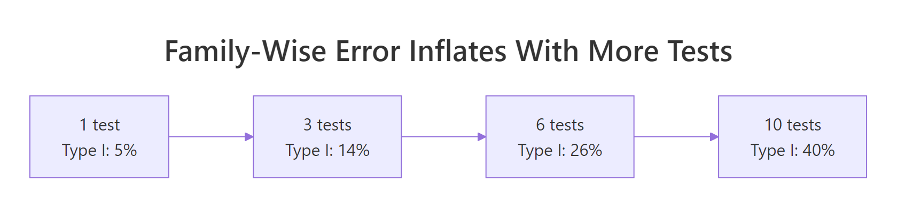
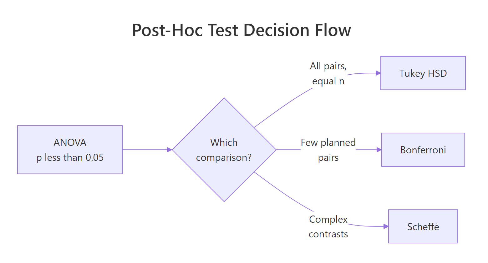
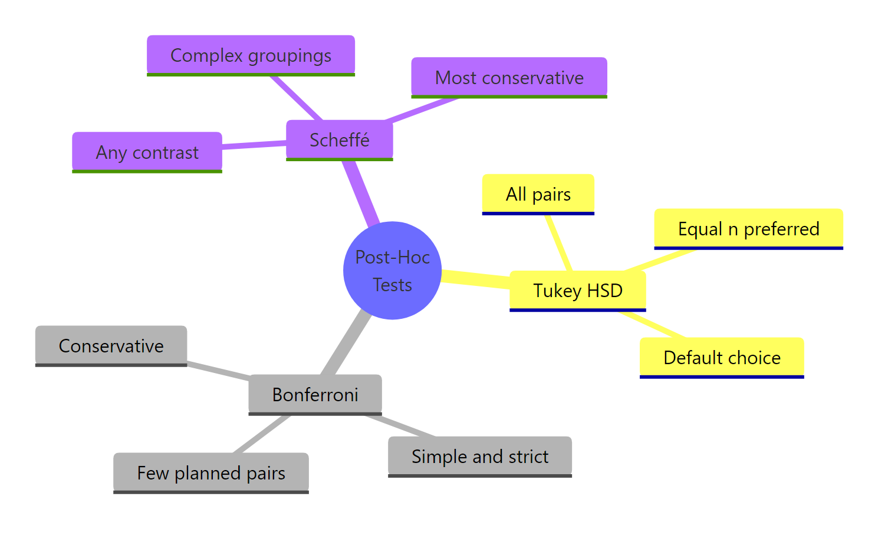

ANOVA Post-Hoc Tests in R: Tukey, Bonferroni, and Scheffé, Clear Decision Rules
A post-hoc test tells you which groups differ after a significant ANOVA rejects the null of equal means. Tukey, Bonferroni, and Scheffé are three standard choices in base R, and each one has a specific job. This tutorial uses built-in R datasets so you can run every line in-browser.
Why do you need a post-hoc test after ANOVA?
ANOVA answers one question, is at least one group mean different, and stops there. It does not tell you which pair is the guilty one. If you answer that by running plain t-tests on every pair, your false-positive rate stops being 5% and starts climbing fast. Post-hoc tests pin down the specific pairs while holding the overall error rate in check. Here is the 3-group PlantGrowth dataset going from a significant F to specific verdicts in two commands.
The F test is significant (p = 0.016), so at least one group mean differs. Tukey HSD then zooms in: only the trt2-trt1 pair has an adjusted p-value below 0.05. Control is not significantly different from either treatment on this sample. That is the full story that ANOVA on its own could not tell you.

Figure 1: Type I error inflates rapidly as more pairwise tests are run.
Every uncorrected t-test carries a 5% false-positive risk. Run 3 tests at 5% and the chance that at least one test cries wolf is about 14%. Run 10 tests and that family-wise error is around 40%. Post-hoc tests tame this inflation by adjusting either the p-values or the critical values so the overall risk stays near your chosen α.
Try it: Run a one-way ANOVA on the chickwts dataset (chick weight by feed type). Print the summary and read off the F statistic.
Click to reveal solution
The F of 15.37 is huge, so at least one feed differs from the others. The next question, which feeds, is exactly what a post-hoc test answers.
How does Tukey HSD compare all pairs?
Tukey HSD stands for Honestly Significant Difference. It is built for the case you run into most often, comparing every pair of group means once you know the ANOVA is significant. Instead of using the t-distribution for each pair, Tukey uses a single distribution called the studentized range, which already accounts for the fact that the biggest pairwise gap in a set of groups is expected to be larger than any one t-test would predict.
The base R function TukeyHSD() takes the fitted aov object and returns one row per pair with a difference estimate, a family-wise 95% confidence interval, and an adjusted p-value.
Each row compares two groups. diff is the point estimate of mean(group1) - mean(group2). lwr and upr bracket that difference with a family-wise CI, meaning all three CIs together have a 95% joint coverage. p adj is the p-value after Tukey's correction. A CI that does not cross zero signals a significant pair, and matches p adj < 0.05.
A picture makes the verdict obvious.
Visually, the zero line is the "no difference" reference. Any interval that crosses it is a non-significant pair. In our PlantGrowth output, only the trt2-trt1 interval lies clear of zero, confirming it as the single significant pair.
Try it: Fit an ANOVA of Sepal.Length on Species in the iris dataset and run TukeyHSD(). Which species pairs are significantly different?
Click to reveal solution
All three pairs differ significantly, so every species has a distinct average sepal length. That clarity is unusual in the wild and is part of why iris is a great teaching dataset.
When should you use Bonferroni correction?
Bonferroni is the simplest correction in the family: divide your target α by the number of comparisons and use that as the new threshold. For three pairs at α = 0.05, each pair must now clear 0.05 / 3 ≈ 0.0167 to count as significant. Equivalently, multiply each raw p-value by the number of comparisons and compare to the original α.
Base R ships pairwise.t.test() which does the work and returns a clean p-value matrix.
The matrix reads like a multiplication table: trt1 vs ctrl has adjusted p = 0.583, trt2 vs trt1 is the only significant pair at p = 0.013. Both the adjusted matrix and Tukey HSD agreed on PlantGrowth, which is common when groups are balanced and only one pair is clearly different.
Seeing the adjustment math written out makes the logic stick.
Each raw p-value is inflated by a factor of 3, then capped at 1. Only the smallest raw p (0.004) survives the bump.
Try it: Re-run pairwise.t.test() on PlantGrowth using Holm's method (p.adjust.method = "holm"). How does the adjusted p-value for trt2-trt1 compare to the Bonferroni value?
Click to reveal solution
Holm adjusts the smallest p by k, the next by k-1, and so on. For the smallest p (trt2-trt1) the multiplier is still 3 here, so the value matches Bonferroni at 0.013. The other pairs get smaller multipliers (2 and 1), which is why Holm is uniformly at least as powerful as Bonferroni.
How does Scheffé test handle complex contrasts?
Scheffé is different from Tukey and Bonferroni in one big way: it controls family-wise error not just over the pairs, but over every possible linear contrast among the groups. A contrast is any weighted combination of group means where the weights sum to zero, like "control vs the average of two treatments" with weights (1, -0.5, -0.5). That extra coverage is Scheffé's selling point and also the reason it has the lowest power of the three tests on simple pairwise work.
Base R does not ship a ready-made ScheffeTest() for all setups, but the computation is short. The trick is to compare a contrast's F statistic to the Scheffé critical value, which is $(k-1) \times F_{\alpha, k-1, N-k}$ where $k$ is the number of groups.
$$F_{contrast} = \frac{\left(\sum_i c_i \bar{y}_i\right)^2}{MSE \cdot \sum_i (c_i^2 / n_i)} \quad\text{vs.}\quad F^*_{Scheffé} = (k-1) \cdot F_{\alpha, k-1, N-k}$$
Where:
- $c_i$ = contrast weight for group $i$ (must sum to zero)
- $\bar{y}_i$ = mean of group $i$
- $n_i$ = size of group $i$
- MSE = residual mean square from ANOVA
- $k$ = number of groups, $N$ = total sample size
Here is the same trt1 vs trt2 pair computed by hand so you can see the moving parts.
F_contrast (9.63) is above the Scheffé critical value (6.71), so the trt1 vs trt2 difference is significant under Scheffé's rule too. Tukey reported the same pair as significant, but notice Scheffé's bar is higher. On simple pairs Scheffé will always be at least as conservative as Tukey. That is the price of covering all contrasts.
Scheffé shines when you want to test a comparison that is not a simple pair. Let's ask whether the control differs from the average of the two treatments combined.
The estimated contrast value is -0.06, tiny, and the F statistic is nowhere near the Scheffé bar. In plain English, control sits almost exactly between the two treatments on average, so there is no evidence that the "ctrl vs average(trt1, trt2)" split is real.
Try it: Compute the Scheffé critical value ($F^*_{Scheffé}$) for an experiment with $k = 4$ groups, $N = 40$ total observations, and α = 0.05.
Click to reveal solution
qf(0.95, 3, 36) gives the standard F critical value, then multiplying by (k - 1) = 3 scales it up to Scheffé's stricter bar.
Which post-hoc test should you actually use?
The honest answer is that these three methods cover distinct situations. Tukey is the default when every pair matters and sizes are roughly balanced. Bonferroni is your pick when you planned a small number of comparisons in advance and want a correction a reviewer cannot argue with. Scheffé is the choice when your hypothesis involves group combinations, not single pairs.

Figure 2: Decision flow for picking the right post-hoc test.
A side-by-side view on the same data makes the differences concrete. Here are all three methods compared on PlantGrowth for a single pair, trt2-trt1.
All three agree the pair is significant at 5%, but Scheffé's adjusted p is roughly twice Tukey's. That gap widens fast as the number of groups grows, which is why picking the right tool matters.
| Test | Best for | Power | CI width |
|---|---|---|---|
| Tukey HSD | All pairwise comparisons, roughly equal n | High | Medium |
| Bonferroni | A small, preplanned list of specific comparisons | Medium | Narrow (for that list) |
| Scheffé | Complex contrasts like control vs average of treatments | Low | Widest |
Try it: A nutritionist tests four diets for weight gain in rats and, before collecting data, writes down that they will only compare diet A with B, and diet C with D. Which post-hoc test fits?
Click to reveal solution
Explanation: Only two specific comparisons were planned before the data was collected, so Bonferroni is the right fit. Tukey would waste statistical power on pairs the researcher never cared about. Scheffé is overkill because no complex contrast is on the table.
How do you check ANOVA assumptions before running post-hoc?
Post-hoc tests inherit every assumption of the ANOVA that preceded them. If the ANOVA result is shaky, the adjusted p-values that follow are just as shaky. The two checks worth doing every time are approximate normality of residuals within each group and approximate equality of variances across groups.
Both p-values are comfortably above 0.05, so PlantGrowth passes both assumptions and Tukey is safe. If normality fails, consider a non-parametric alternative like the Kruskal-Wallis test followed by Dunn's test. If variances are clearly unequal, oneway.test() with var.equal = FALSE gives a Welch-style F test and the Games-Howell procedure gives Tukey-style pairs that do not assume equal variances.
Try it: Run Bartlett's test on iris with Sepal.Length ~ Species. Based on the p-value, is Tukey HSD a reasonable follow-up?
Click to reveal solution
Variance equality is rejected at p = 0.0003. Tukey HSD is sensitive to unequal variances when group sizes are also unequal; here the sizes are equal (50 each) so Tukey is still usable, but a Games-Howell follow-up would be safer for a careful report.
Practice Exercises
These exercises combine multiple concepts from the tutorial. Variable names use the my_* prefix so your exercise code does not overwrite earlier tutorial objects.
Exercise 1: Pairwise differences in chickwts
Fit a one-way ANOVA of weight on feed for the chickwts dataset and run Tukey HSD. Identify which feed pairs differ significantly at the 5% family-wise level.
Click to reveal solution
Eight of fifteen pairs clear the 5% bar. Casein outperforms horsebean, linseed, and soybean; sunflower also crushes horsebean and linseed. Tukey turns a single "some feed matters" verdict from ANOVA into a concrete list of dominant feeds.
Exercise 2: Manual Bonferroni on InsectSprays
Using InsectSprays, compute an uncorrected pairwise t-test p-value for sprays A and B, then apply a manual Bonferroni adjustment. There are 6 sprays and therefore choose(6, 2) = 15 possible pairs.
Click to reveal solution
The raw p of 0.61 was never close to significance, and after multiplying by 15 pairs Bonferroni caps at 1, confirming the non-difference with room to spare.
Exercise 3: Scheffé contrast on PlantGrowth
Using PlantGrowth, test the contrast "control mean vs the average of the two treatment means" with Scheffé's method. Is the contrast significant at α = 0.05?
Click to reveal solution
Not significant. Control sits almost exactly halfway between trt1 and trt2 on this sample, so "ctrl vs average of both treatments" has no teeth.
Complete Example: InsectSprays
Here is the full pipeline on a fresh dataset. InsectSprays records the number of insects counted after spraying one of six pesticides (A through F) on agricultural plots.
The ANOVA is strongly significant (F = 34.7, p < 0.001). Assumption checks raise flags, especially on equal variances, which is textbook for count data. In a careful analysis you would follow up with a transformation (sqrt(count)) or a non-parametric Kruskal-Wallis + Dunn test. For illustration, Tukey's output still makes the pattern clear: sprays A, B, and F are roughly equivalent and effective, while C, D, and E let many more insects through. The 15 Tukey CIs match this story, with the A-B-F cluster on one side of zero and the C-D-E cluster on the other.
Summary

Figure 3: Three post-hoc tests compared on purpose, strictness, and use case.
| Test | Default use case | Power | Adjusted p in R |
|---|---|---|---|
| Tukey HSD | All pairs, balanced n | High | TukeyHSD(aov_fit) |
| Bonferroni | Few planned pairs | Medium | pairwise.t.test(y, g, p.adjust.method = "bonferroni") |
| Scheffé | Complex contrasts | Low | Manual via F critical (k-1)*qf(0.95, k-1, N-k) |
Key takeaways:
- ANOVA tells you if group means differ; a post-hoc test tells you which ones.
- Running uncorrected t-tests on every pair explodes your family-wise Type I error.
- Tukey HSD is the default for exploratory pairwise work with
aov. - Bonferroni stays simple and defensible for a small, pre-planned list of comparisons.
- Scheffé trades power for coverage of any linear contrast, including comparisons of group averages.
- Always verify ANOVA's assumptions first. Violated assumptions upstream invalidate every post-hoc p-value downstream.
References
- R Core Team. TukeyHSD, Base R function documentation. Link
- R Core Team. pairwise.t.test, Base R function documentation. Link
- Scheffé, H. (1953). "A method for judging all contrasts in the analysis of variance." Biometrika, 40(1-2), 87-110. Link
- Tukey, J. W. (1953). The Problem of Multiple Comparisons. Mimeographed monograph, Princeton University.
- Dunn, O. J. (1961). "Multiple Comparisons Among Means." Journal of the American Statistical Association, 56(293), 52-64. Link
- Hsu, J. C. (1996). Multiple Comparisons: Theory and Methods. Chapman and Hall/CRC.
- Kutner, M. H., Nachtsheim, C. J., Neter, J., and Li, W. (2005). Applied Linear Statistical Models, 5th edition. McGraw-Hill.
Continue Learning
- One-Way ANOVA in R, the ANOVA model that every post-hoc test is built on top of.
- Multiple Testing Correction in R, the broader toolkit, including Holm, Hochberg, and Benjamini-Hochberg FDR.
- t-Tests in R, the pairwise building block that post-hoc tests correct and package together.